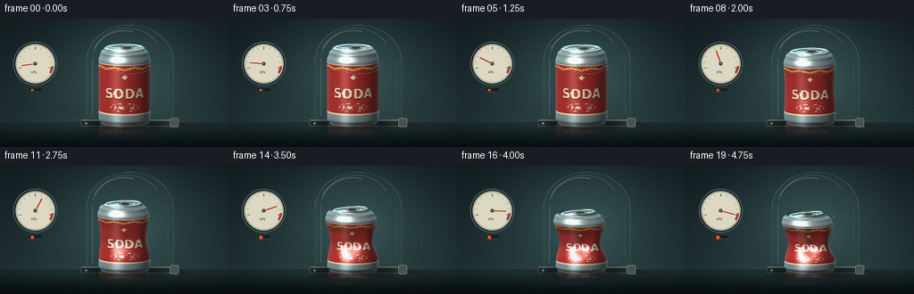
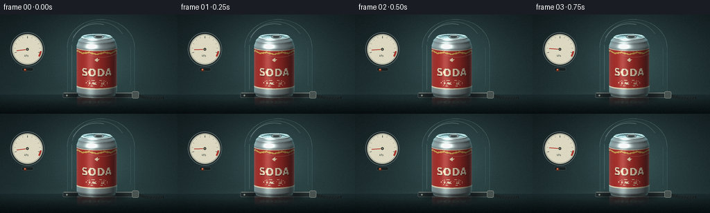
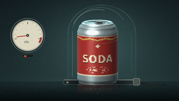
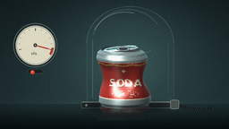

CODING AGENTS AS PIXEL WORLD MODELS
traex/DeepSeek-V4.1-Flash · mechanics_0022
点击播放 · 原生 RGB 像素
逐轮保存的候选
回放视频、检查图与代码变化。
每份候选均可单独播放。实际图片检查记录在下方工具轨迹中。
候选 01播放与检查图
点击播放 · 原生 RGB 像素

展开代码变化
--- 上一保存版本
+++ 本次保存版本
@@ -0,0 +1,641 @@
+from __future__ import annotations
+
+import math
+from pathlib import Path
+
+import numpy as np
+from PIL import Image, ImageDraw, ImageFilter, ImageFont
+
+import artifact_io
+
+
+ROOT = Path(__file__).resolve().parent
+W, H = 256, 144
+SS = 4
+FPS = 4.0
+NFRAMES = 20
+
+
+def smoothstep(x: float) -> float:
+ x = float(np.clip(x, 0.0, 1.0))
+ return x * x * (3.0 - 2.0 * x)
+
+
+def ss(value: float) -> float:
+ return value * SS
+
+
+def make_label_texture() -> Image.Image:
+ """Wrap-around can artwork sampled by the body faces."""
+ tw, th = 1024, 512
+ tex = Image.new("RGB", (tw, th), (178, 48, 42))
+ draw = ImageDraw.Draw(tex)
+
+ # Deep vermilion label with warm off-white trim and a restrained gold ribbon.
+ draw.rectangle((0, 70, tw, 443), fill=(174, 48, 43))
+ draw.rectangle((0, 82, tw, 91), fill=(231, 216, 183))
+ draw.rectangle((0, 424, tw, 433), fill=(231, 216, 183))
+ draw.rectangle((0, 441, tw, 449), fill=(42, 61, 59))
+
+ for x in range(0, tw, 128):
+ draw.polygon(
+ [(x, 116), (x + 64, 100), (x + 128, 116), (x + 128, 129),
+ (x + 64, 113), (x, 129)],
+ fill=(213, 164, 83),
+ )
+
+ # A simple sparkling mark, visible above the wordmark.
+ cx, cy = tw // 2, 171
+ draw.polygon([(cx, cy - 23), (cx + 6, cy - 5), (cx + 24, cy),
+ (cx + 6, cy + 6), (cx, cy + 24), (cx - 6, cy + 6),
+ (cx - 24, cy), (cx - 6, cy - 5)], fill=(239, 222, 185))
+
+ try:
+ font = ImageFont.truetype(
+ "/usr/share/fonts/truetype/dejavu/DejaVuSansCondensed-Bold.ttf", 93
+ )
+ small = ImageFont.truetype(
+ "/usr/share/fonts/truetype/dejavu/DejaVuSansCondensed-Bold.ttf", 24
+ )
+ except OSError:
+ font = ImageFont.load_default()
+ small = font
+
+ text = "SODA"
+ bbox = draw.textbbox((0, 0), text, font=font)
+ tx = (tw - (bbox[2] - bbox[0])) // 2
+ draw.text((tx + 2, 235), text, font=font, fill=(85, 24, 25))
+ draw.text((tx, 231), text, font=font, fill=(239, 223, 191))
+
+ # Small circular seal balances the label without becoming visual noise.
+ draw.ellipse((421, 350, 603, 407), outline=(231, 214, 179), width=3)
+ caption = "PURE FIZZ"
+ bbox = draw.textbbox((0, 0), caption, font=small)
+ draw.text(
+ ((tw - (bbox[2] - bbox[0])) // 2, 365),
+ caption,
+ font=small,
+ fill=(233, 217, 184),
+ )
+ return tex
+
+
+LABEL_TEXTURE = make_label_texture()
+
+
+def can_geometry(t: float):
+ collapse = 0.0 if t < 0.12 else smoothstep((t - 0.12) / 0.86) ** 1.25
+ collapse = float(np.clip(collapse, 0.0, 1.0))
+ wobble = 0.55 * math.sin(46.0 * t) * collapse * (1.0 - collapse)
+ return collapse, wobble
+
+
+def radius_profile(v: float) -> float:
+ if v < 0.07:
+ return 0.91 + 0.09 * smoothstep(v / 0.07)
+ if v < 0.84:
+ return 1.0
+ if v < 0.94:
+ return 1.0 - 0.08 * smoothstep((v - 0.84) / 0.10)
+ return 0.92 - 0.14 * smoothstep((v - 0.94) / 0.06)
+
+
+def body_radius(theta: float, v: float, collapse: float) -> float:
+ base = 29.0 * radius_profile(v)
+ upper_waist = math.exp(-((v - 0.48) / 0.185) ** 2)
+ lower_fold = math.exp(-((v - 0.68) / 0.12) ** 2)
+ angular = (
+ 0.64
+ + 0.23 * math.cos(3.0 * theta + 0.70)
+ + 0.13 * math.cos(5.0 * theta - 0.35)
+ )
+ angular2 = 0.62 + 0.38 * math.cos(2.0 * theta + 1.25)
+ dent = collapse * (0.37 * upper_waist * angular + 0.13 * lower_fold * angular2)
+ top_crumple = collapse * 0.075 * smoothstep((v - 0.87) / 0.13) * (
+ 0.55 + 0.45 * math.cos(2.0 * theta + 0.4)
+ )
+ return base * max(0.52, 1.0 - dent - top_crumple)
+
+
+def body_axis_x(v: float, collapse: float, wobble: float) -> float:
+ bend = -4.7 * collapse * (v ** 1.55) + 1.15 * collapse * math.sin(math.pi * v)
+ return bend + wobble * math.sin(math.pi * v)
+
+
+def project(x: float, y: float, z: float) -> tuple[float, float]:
+ # The small depth term gives the camera a gentle elevated three-quarter view.
+ return (139.5 + x) * SS, (117.0 - y + 0.16 * z) * SS
+
+
+def face_normal(p0, p1, p2):
+ a = np.asarray(p1, dtype=float) - np.asarray(p0, dtype=float)
+ b = np.asarray(p2, dtype=float) - np.asarray(p0, dtype=float)
+ n = np.cross(a, b)
+ length = np.linalg.norm(n)
+ if length < 1e-8:
+ return np.array((0.0, 0.0, 1.0))
+ return n / length
+
+
+def shade_color(
+ normal: np.ndarray,
+ theta: float,
+ v: float,
+ base_rgb,
+ label: bool,
+ collapse: float,
+) -> tuple[int, int, int]:
+ n = normal
+ if n[2] < 0.0:
+ n = -n
+ light = np.array((-0.42, 0.68, 0.60), dtype=float)
+ light /= np.linalg.norm(light)
+ view = np.array((0.0, 0.08, 1.0), dtype=float)
+ view /= np.linalg.norm(view)
+ half_vec = light + view
+ half_vec /= np.linalg.norm(half_vec)
+
+ ndl = max(0.0, float(np.dot(n, light)))
+ spec = max(0.0, float(np.dot(n, half_vec))) ** (34.0 if label else 26.0)
+ fresnel = (1.0 - abs(float(n[2]))) ** 3
+ ambient = 0.30 + 0.12 * (0.5 + 0.5 * float(n[1]))
+
+ rgb = np.asarray(base_rgb, dtype=float)
+ color = rgb * (ambient + 0.78 * ndl)
+ color += spec * np.array((236.0, 239.0, 226.0))
+ color += fresnel * np.array((38.0, 74.0, 78.0))
+
+ # Narrow studio softbox reflection on the polished body.
+ strip = math.exp(-((theta + 0.32) / 0.22) ** 2)
+ color += strip * (0.21 if label else 0.30) * np.array((112.0, 131.0, 126.0))
+
+ if collapse > 0.03:
+ waist = math.exp(-((v - 0.50) / 0.22) ** 2)
+ color *= 1.0 - 0.12 * collapse * waist
+ return tuple(np.clip(color, 0, 255).astype(np.uint8).tolist())
+
+
+def render_can_layer(t: float) -> tuple[Image.Image, float, float]:
+ layer = Image.new("RGBA", (W * SS, H * SS), (0, 0, 0, 0))
+ draw = ImageDraw.Draw(layer)
+ collapse, wobble = can_geometry(t)
+ height = 84.0 - 22.0 * (collapse ** 1.05)
+ faces = []
+
+ n_theta = 144
+ n_v = 92
+ vertices = {}
+ for j in range(n_v + 1):
+ v = j / n_v
+ for i in range(n_theta + 1):
+ theta = -math.pi + 2.0 * math.pi * i / n_theta
+ r = body_radius(theta, v, collapse)
+ x = body_axis_x(v, collapse, wobble) + r * math.sin(theta)
+ z = r * math.cos(theta)
+ y = v * height
+ vertices[(i, j)] = (x, y, z)
+
+ for j in range(n_v):
+ v = (j + 0.5) / n_v
+ for i in range(n_theta):
+ theta = -math.pi + 2.0 * math.pi * (i + 0.5) / n_theta
+ p00 = vertices[(i, j)]
+ p10 = vertices[(i + 1, j)]
+ p11 = vertices[(i + 1, j + 1)]
+ p01 = vertices[(i, j + 1)]
+ zavg = (p00[2] + p10[2] + p11[2] + p01[2]) * 0.25
+ n = face_normal(p00, p10, p01)
+ in_label = 0.155 <= v <= 0.825
+ if in_label:
+ u = (theta + math.pi) / (2.0 * math.pi)
+ px = min(1023, max(0, int(u * 1024)))
+ py = min(511, max(0, int((1.0 - v) * 512)))
+ base = LABEL_TEXTURE.getpixel((px, py))
+ else:
+ metal_level = 0.72 + 0.24 * math.sin(math.pi * np.clip(v, 0.0, 1.0))
+ base = (
+ int(159 * metal_level),
+ int(177 * metal_level),
+ int(179 * metal_level),
+ )
+ color = shade_color(n, theta, v, base, in_label, collapse)
+ poly = [project(*p) for p in (p00, p10, p11, p01)]
+ faces.append((zavg, poly, color))
+
+ # The upper lid is a shallow metal disk with a raised rim and a crumpled edge.
+ lid_r = 22.6 * (1.0 - 0.11 * collapse)
+ top_axis = body_axis_x(1.0, collapse, wobble)
+ lid_center_y = height
+ ring_count = 11
+ sectors = 96
+
+ def lid_point(theta, frac):
+ irregular = 1.0 - 0.10 * collapse * (0.55 + 0.45 * math.cos(2.0 * theta + 0.8))
+ r = lid_r * frac * irregular
+ x = top_axis + r * math.sin(theta)
+ z = r * math.cos(theta) * (1.0 + 0.035 * collapse)
+ dome = 1.55 * (1.0 - frac * frac)
+ rim = 1.20 * math.exp(-((frac - 0.90) / 0.075) ** 2)
+ tilt = 2.1 * collapse * math.sin(theta + 0.4) * frac
+ return (x, lid_center_y + dome + rim + tilt, z)
+
+ for q in range(ring_count):
+ f0, f1 = q / ring_count, (q + 1) / ring_count
+ for i in range(sectors):
+ a0 = -math.pi + 2.0 * math.pi * i / sectors
+ a1 = -math.pi + 2.0 * math.pi * (i + 1) / sectors
+ p00 = lid_point(a0, f0)
+ p10 = lid_point(a1, f0)
+ p11 = lid_point(a1, f1)
+ p01 = lid_point(a0, f1)
+ n = face_normal(p00, p10, p01)
+ if n[1] < 0:
+ n = -n
+ zavg = (p00[2] + p10[2] + p11[2] + p01[2]) * 0.25
+ level = 0.75 + 0.23 * f1
+ if q == 0:
+ level *= 0.62
+ if q >= ring_count - 2:
+ level *= 1.09
+ base = (int(165 * level), int(181 * level), int(181 * level))
+ color = shade_color(n, (a0 + a1) * 0.5, 0.97, base, False, collapse)
+ poly = [project(*p) for p in (p00, p10, p11, p01)]
+ faces.append((zavg + 0.15, poly, color))
+
+ faces.sort(key=lambda item: item[0])
+ for _, poly, color in faces:
+ draw.polygon(poly, fill=color + (255,))
+
+ # Pull tab sits just proud of the lid; the dark slot reads at thumbnail size.
+ top_x = 139.5 + top_axis + 3.0
+ top_y = 117.0 - lid_center_y - 0.16 * 4.0
+ tab_w, tab_h = 15.5, 5.3
+ draw.ellipse(
+ (ss(top_x - tab_w / 2), ss(top_y - tab_h / 2),
+ ss(top_x + tab_w / 2), ss(top_y + tab_h / 2)),
+ fill=(142, 158, 158, 255),
+ outline=(74, 88, 89, 255),
+ width=max(1, int(SS * 0.55)),
+ )
+ draw.ellipse(
+ (ss(top_x - 4.8), ss(top_y - 1.6), ss(top_x + 4.8), ss(top_y + 1.6)),
+ fill=(51, 64, 65, 255),
+ )
+ draw.line(
+ (ss(top_x - 4.5), ss(top_y - 1.7), ss(top_x + 3.5), ss(top_y - 1.7)),
+ fill=(218, 223, 211, 255),
+ width=max(1, int(SS * 0.55)),
+ )
+ return layer, collapse, height
+
+
+def make_background(t: float) -> Image.Image:
+ yy, xx = np.mgrid[0:H * SS, 0:W * SS]
+ x = xx / (W * SS)
+ y = yy / (H * SS)
+ top = np.array((20.0, 31.0, 34.0))
+ bottom = np.array((32.0, 49.0, 51.0))
+ grad = np.clip(y / 0.82, 0.0, 1.0)[..., None]
+ image = top * (1.0 - grad) + bottom * grad
+
+ # Soft pool of cool studio light behind the chamber.
+ glow = np.exp(
+ -(
+ ((x - 0.55) / 0.31) ** 2
+ + ((y - 0.42) / 0.43) ** 2
+ )
+ )
+ image += glow[..., None] * np.array((25.0, 37.0, 36.0))
+
+ # Brushed, reflective bench below the base plate.
+ floor_mask = y > 0.805
+ floor_y = np.clip((y - 0.805) / 0.195, 0.0, 1.0)
+ floor_color = np.array((18.0, 27.0, 29.0))[None, None, :] * (1.0 - floor_y[..., None])
+ floor_color += np.array((8.0, 15.0, 16.0))[None, None, :]
+ image = np.where(floor_mask[..., None], floor_color, image)
+
+ # Fine horizontal table grain and a very subtle sweeping light streak.
+ grain = 2.2 * np.sin(yy * 1.37 + np.sin(xx * 0.013) * 2.0)
+ image += np.where(floor_mask[..., None], grain[..., None] * 0.36, 0.0)
+ sweep = np.exp(-((y - 0.84) / 0.06) ** 2) * np.exp(-((x - 0.52) / 0.42) ** 2)
+ image += sweep[..., None] * np.array((8.0, 10.0, 9.0))
+
+ # Vignette keeps attention on the can.
+ radius = np.sqrt(((x - 0.53) / 0.67) ** 2 + ((y - 0.48) / 0.79) ** 2)
+ vignette = np.clip(1.0 - 0.34 * np.maximum(radius - 0.58, 0.0) ** 1.3, 0.65, 1.0)
+ image *= vignette[..., None]
+
+ arr = np.clip(image, 0, 255).astype(np.uint8)
+ return Image.fromarray(arr, "RGB")
+
+
+def gauge_angle(pressure_fraction: float) -> float:
+ start, end = 196.0, -16.0
+ return math.radians(start + (end - start) * float(np.clip(pressure_fraction, 0.0, 1.0)))
+
+
+def draw_gauge(draw: ImageDraw.ImageDraw, pressure_fraction: float) -> None:
+ cx, cy, radius = 39.5, 50.5, 20.5
+ # Housing, bezel, and face.
+ draw.ellipse(
+ (ss(cx - radius - 4.2), ss(cy - radius - 4.2),
+ ss(cx + radius + 4.2), ss(cy + radius + 4.2)),
+ fill=(29, 38, 40),
+ outline=(83, 99, 98),
+ width=int(SS * 1.0),
+ )
+ draw.ellipse(
+ (ss(cx - radius - 1.5), ss(cy - radius - 1.5),
+ ss(cx + radius + 1.5), ss(cy + radius + 1.5)),
+ fill=(150, 158, 150),
+ outline=(214, 210, 184),
+ width=int(SS * 0.75),
+ )
+ draw.ellipse(
+ (ss(cx - radius), ss(cy - radius), ss(cx + radius), ss(cy + radius)),
+ fill=(220, 216, 193),
+ )
+
+ # Red vacuum warning sector.
+ for deg in np.linspace(328, 344, 18):
+ a0 = math.radians(deg)
+ a1 = math.radians(deg + 8.2)
+ p0 = (ss(cx + (radius - 2.0) * math.cos(a0)),
+ ss(cy - (radius - 2.0) * math.sin(a0)))
+ p1 = (ss(cx + radius * math.cos(a0)), ss(cy - radius * math.sin(a0)))
+ p2 = (ss(cx + radius * math.cos(a1)), ss(cy - radius * math.sin(a1)))
+ p3 = (ss(cx + (radius - 2.0) * math.cos(a1)),
+ ss(cy - (radius - 2.0) * math.sin(a1)))
+ draw.polygon((p0, p1, p2, p3), fill=(174, 55, 44))
+
+ # Tick scale.
+ for index in range(11):
+ frac = index / 10.0
+ angle = gauge_angle(frac)
+ inner = radius - (4.3 if index % 5 == 0 else 3.2)
+ outer = radius - 1.5
+ x0 = cx + inner * math.cos(angle)
+ y0 = cy - inner * math.sin(angle)
+ x1 = cx + outer * math.cos(angle)
+ y1 = cy - outer * math.sin(angle)
+ draw.line(
+ (ss(x0), ss(y0), ss(x1), ss(y1)),
+ fill=(42, 51, 50),
+ width=max(1, int(SS * (0.9 if index % 5 == 0 else 0.45))),
+ )
+
+ try:
+ gauge_font = ImageFont.truetype(
+ "/usr/share/fonts/truetype/dejavu/DejaVuSansCondensed-Bold.ttf", int(4.5 * SS)
+ )
+ unit_font = ImageFont.truetype(
+ "/usr/share/fonts/truetype/dejavu/DejaVuSansCondensed.ttf", int(4.1 * SS)
+ )
+ except OSError:
+ gauge_font = ImageFont.load_default()
+ unit_font = gauge_font
+ draw.text((ss(cx - 4.5), ss(cy + 7.0)), "kPa", font=unit_font, fill=(53, 62, 60))
+
+ # Needle overshoots very slightly during evacuation, then settles.
+ angle = gauge_angle(pressure_fraction)
+ length = radius - 5.1
+ x1 = cx + length * math.cos(angle)
+ y1 = cy - length * math.sin(angle)
+ draw.line(
+ (ss(cx), ss(cy), ss(x1), ss(y1)),
+ fill=(176, 48, 38),
+ width=max(1, int(SS * 1.25)),
+ )
+ draw.ellipse(
+ (ss(cx - 2.4), ss(cy - 2.4), ss(cx + 2.4), ss(cy + 2.4)),
+ fill=(45, 55, 54),
+ outline=(214, 202, 173),
+ width=max(1, int(SS * 0.55)),
+ )
+ draw.ellipse(
+ (ss(cx - 0.7), ss(cy - 0.7), ss(cx + 0.7), ss(cy + 0.7)),
+ fill=(219, 197, 157),
+ )
+
+ # A small pressure LED below the dial brightens as vacuum builds.
+ led_y = 77.0
+ led_color = (
+ int(74 + 160 * pressure_fraction),
+ int(42 + 20 * pressure_fraction),
+ int(31 + 8 * pressure_fraction),
+ )
+ draw.rounded_rectangle(
+ (ss(31.0), ss(led_y), ss(48.0), ss(82.0)),
+ radius=ss(2.0),
+ fill=(24, 33, 34),
+ outline=(63, 77, 76),
+ width=max(1, int(SS * 0.55)),
+ )
+ draw.ellipse(
+ (ss(34.0), ss(led_y + 1.3), ss(38.6), ss(led_y + 5.9)),
+ fill=led_color,
+ )
+ draw.ellipse(
+ (ss(35.0), ss(led_y + 2.1), ss(36.8), ss(led_y + 3.9)),
+ fill=(235, 132, 94),
+ )
+
+
+def draw_chamber_back(draw: ImageDraw.ImageDraw) -> None:
+ # Acrylic bell jar: a faint tint plus a crisp back edge.
+ left, right, top, base = 97.0, 194.0, 7.0, 114.5
+ points = []
+ for i in range(61):
+ a = math.pi - math.pi * i / 60
+ points.append(
+ (
+ ss((left + right) / 2 + (right - left) / 2 * math.cos(a)),
+ ss(48.0 - 41.0 * math.sin(a)),
+ )
+ )
+ points.extend([(ss(right), ss(base)), (ss(left), ss(base))])
+ draw.polygon(points, fill=(65, 104, 106, 16))
+ draw.line(points[:61], fill=(126, 166, 164, 125), width=max(1, int(SS * 0.7)))
+ draw.line((ss(left), ss(48.0), ss(left), ss(base)), fill=(98, 137, 136, 100), width=max(1, int(SS * 0.55)))
+ draw.line((ss(right), ss(48.0), ss(right), ss(base)), fill=(98, 137, 136, 100), width=max(1, int(SS * 0.55)))
+
+ # Broad, soft back reflection.
+ draw.arc(
+ (ss(102.0), ss(10.0), ss(184.0), ss(90.0)),
+ 196, 326,
+ fill=(160, 194, 189, 45),
+ width=max(2, int(SS * 1.4)),
+ )
+
+ # Chamber base is graphite with a narrow polished lip.
+ draw.rounded_rectangle(
+ (ss(90.5), ss(113.0), ss(198.5), ss(120.8)),
+ radius=ss(2.0),
+ fill=(35, 44, 45),
+ outline=(77, 90, 89),
+ width=max(1, int(SS * 0.8)),
+ )
+ draw.line(
+ (ss(92.0), ss(114.2), ss(197.0), ss(114.2)),
+ fill=(132, 145, 139),
+ width=max(1, int(SS * 0.75)),
+ )
+ for x in (96.5, 192.5):
+ draw.ellipse(
+ (ss(x - 1.3), ss(116.2), ss(x + 1.3), ss(118.8)),
+ fill=(151, 157, 147),
+ outline=(55, 66, 66),
+ width=max(1, int(SS * 0.4)),
+ )
+
+
+def draw_hose(draw: ImageDraw.ImageDraw, t: float) -> None:
+ # Corrugated vacuum line exits the sealed base at screen right.
+ pts = []
+ for i in range(36):
+ u = i / 35.0
+ x = 196.0 + 40.0 * u
+ y = 116.5 + 4.2 * math.sin(u * math.pi * 0.92) + 3.5 * u * u
+ pts.append((ss(x), ss(y)))
+ draw.line(pts, fill=(20, 27, 28), width=int(SS * 4.2), joint="curve")
+ for i in range(1, 34, 2):
+ x, y = pts[i]
+ draw.line(
+ (x - SS * 0.7, y - SS * 2.0, x + SS * 0.7, y + SS * 2.0),
+ fill=(57, 68, 68),
+ width=max(1, int(SS * 0.65)),
+ )
+ draw.rounded_rectangle(
+ (ss(190.2), ss(111.4), ss(200.0), ss(121.5)),
+ radius=ss(2.0),
+ fill=(72, 82, 80),
+ outline=(153, 158, 146),
+ width=max(1, int(SS * 0.55)),
+ )
+
+
+def draw_chamber_front(draw: ImageDraw.ImageDraw) -> None:
+ # Highlights are placed in front of the can to sell the glass enclosure.
+ draw.arc(
+ (ss(101.5), ss(13.0), ss(178.0), ss(83.0)),
+ 205, 285,
+ fill=(188, 218, 210, 72),
+ width=max(2, int(SS * 1.2)),
+ )
+ draw.line(
+ (ss(103.7), ss(44.0), ss(103.7), ss(109.0)),
+ fill=(190, 220, 213, 58),
+ width=max(1, int(SS * 0.8)),
+ )
+ draw.line(
+ (ss(188.0), ss(48.0), ss(188.0), ss(103.0)),
+ fill=(169, 203, 198, 36),
+ width=max(1, int(SS * 0.6)),
+ )
+ draw.arc(
+ (ss(110.0), ss(6.5), ss(183.0), ss(62.0)),
+ 52, 121,
+ fill=(210, 231, 220, 60),
+ width=max(1, int(SS * 0.7)),
+ )
+
+
+def make_shadow(collapse: float) -> Image.Image:
+ shadow = Image.new("RGBA", (W * SS, H * SS), (0, 0, 0, 0))
+ draw = ImageDraw.Draw(shadow)
+ width = 43.0 + 5.0 * collapse
+ draw.ellipse(
+ (ss(139.5 - width), ss(113.5), ss(139.5 + width), ss(124.2)),
+ fill=(2, 7, 8, 140),
+ )
+ shadow = shadow.filter(ImageFilter.GaussianBlur(ss(3.2)))
+ return shadow
+
+
+def add_reflection(base: Image.Image, can_layer: Image.Image) -> Image.Image:
+ crop = can_layer.crop((0, int(ss(54)), W * SS, int(ss(119))))
+ reflected = crop.transpose(Image.Transpose.FLIP_TOP_BOTTOM)
+ reflected = reflected.resize((W * SS, int(ss(19))), Image.Resampling.LANCZOS)
+ alpha = np.linspace(68, 0, reflected.height, dtype=np.float32)[:, None]
+ arr = np.asarray(reflected).astype(np.float32)
+ arr[..., 3] *= alpha / 255.0
+ reflected = Image.fromarray(np.clip(arr, 0, 255).astype(np.uint8), "RGBA")
+ reflected = reflected.filter(ImageFilter.GaussianBlur(ss(0.75)))
+ out = base.convert("RGBA")
+ out.alpha_composite(reflected, (0, int(ss(117))))
+ return out.convert("RGB")
+
+
+def render_frame(frame_index: int) -> np.ndarray:
+ t = frame_index / (NFRAMES - 1)
+ collapse, _ = can_geometry(t)
+ pressure_fraction = smoothstep(t)
+ pressure_fraction = 0.04 + 0.96 * pressure_fraction
+ # Slight needle overshoot during the strongest evacuation.
+ pressure_fraction += 0.022 * math.sin(37.0 * t) * (1.0 - t) ** 1.5
+ pressure_fraction = float(np.clip(pressure_fraction, 0.0, 1.0))
+
+ base = make_background(t).convert("RGBA")
+ back_overlay = Image.new("RGBA", base.size, (0, 0, 0, 0))
+ back_draw = ImageDraw.Draw(back_overlay)
+ draw_gauge(back_draw, pressure_fraction)
+ draw_chamber_back(back_draw)
+ draw_hose(back_draw, t)
+ base = Image.alpha_composite(base, back_overlay)
+
+ base = Image.alpha_composite(base, make_shadow(collapse))
+ can_layer, _, _ = render_can_layer(t)
+ base = add_reflection(base, can_layer).convert("RGBA")
+ base = Image.alpha_composite(base, can_layer)
+
+ front_overlay = Image.new("RGBA", base.size, (0, 0, 0, 0))
+ front_draw = ImageDraw.Draw(front_overlay)
+ draw_chamber_front(front_draw)
+ base = Image.alpha_composite(base, front_overlay)
+
+ # Gentle atmospheric lift inside the chamber as pressure drops.
+ haze = Image.new("RGBA", base.size, (0, 0, 0, 0))
+ haze_draw = ImageDraw.Draw(haze)
+ haze_draw.ellipse(
+ (ss(105.0), ss(36.0), ss(185.0), ss(113.0)),
+ fill=(122, 159, 157, int(4 + 5 * pressure_fraction)),
+ )
+ haze = haze.filter(ImageFilter.GaussianBlur(ss(10.0)))
+ base = Image.alpha_composite(base, haze)
+
+ frame = base.convert("RGB").resize((W, H), Image.Resampling.LANCZOS)
+ arr = np.asarray(frame).astype(np.float32)
+
+ # Deterministic film grain and a very slight highlight rolloff.
+ rng = np.random.default_rng(2200 + frame_index)
+ noise = rng.normal(0.0, 1.0, (H, W, 1)).astype(np.float32)
+ arr += noise * 1.15
+ arr = np.where(arr > 244.0, 244.0 + (arr - 244.0) * 0.45, arr)
+ return np.clip(arr, 0, 255).astype(np.uint8)
+
+
+def main() -> None:
+ frames = np.stack([render_frame(i) for i in range(NFRAMES)], axis=0)
+ artifact_io.save(frames, ROOT)
+
+ # An MP4 is useful for direct playback; the benchmark artifacts remain canonical.
+ try:
+ import imageio.v2 as imageio
+
+ with imageio.get_writer(
+ ROOT / "video.mp4",
+ fps=FPS,
+ codec="libx264",
+ quality=8,
+ macro_block_size=1,
+ ) as writer:
+ for frame in frames:
+ writer.append_data(frame)
+ except Exception as exc:
+ print(f"MP4 export skipped: {exc}")
+
+ print(f"Rendered {NFRAMES} frames at {W}x{H}, {FPS:g} fps")
+
+
+if __name__ == "__main__":
+ main()
可观测工具轨迹
实际执行的命令与返回图片。
命令 1exit 0
/bin/bash -c "pwd && rg --files -g 'prompt.txt' -g 'GENERATION_RULES.md' -g 'task_spec.json' -g '"'!**/.git/**'"'"
命令 2exit 0
/bin/bash -c 'ls -la'
命令 3exit 0
/bin/bash -c 'cat prompt.txt'
命令 4exit 0
/bin/bash -c 'cat GENERATION_RULES.md'
命令 5exit 0
/bin/bash -c 'cat task_spec.json'
命令 6exit 0
/bin/bash -c "sed -n '1,240p' artifact_io.py"
命令 7exit 0
/bin/bash -c 'fc-list | head -40'
命令 8exit 0
/bin/bash -c "python - <<'PY'
import PIL, numpy
print('PIL', PIL.__version__)
print('numpy', numpy.__version__)
PY"命令 9exit 0
/bin/bash -c "which ffmpeg || true; python - <<'PY'
import importlib.util
for name in ['imageio','imageio_ffmpeg','cv2','scipy']:
print(name, bool(importlib.util.find_spec(name)))
PY"命令 10exit 1
/bin/bash -c 'python generate.py'
命令 11exit 0
/bin/bash -c 'python generate.py'
命令 12exit 0
/bin/bash -c 'mkdir -p .tmp/candidate_v1 && cp inspection.png transition_check.png frames/00.png frames/19.png .tmp/candidate_v1/'
视觉工具实际返回图片 1

视觉工具实际返回图片 2

视觉工具实际返回图片 3

视觉工具实际返回图片 4

保存候选 1 份；完成命令 12 次；可验证图片返回 4 张。原始 API 响应与完整日志保留在本地。